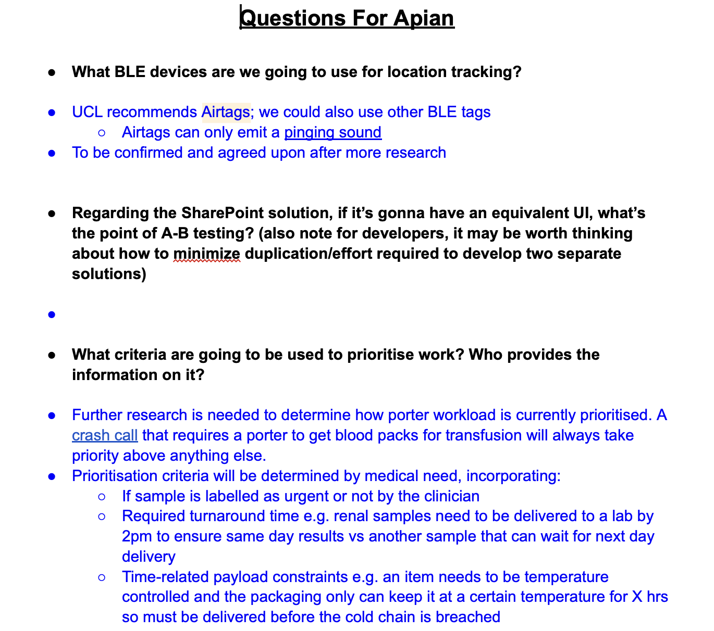
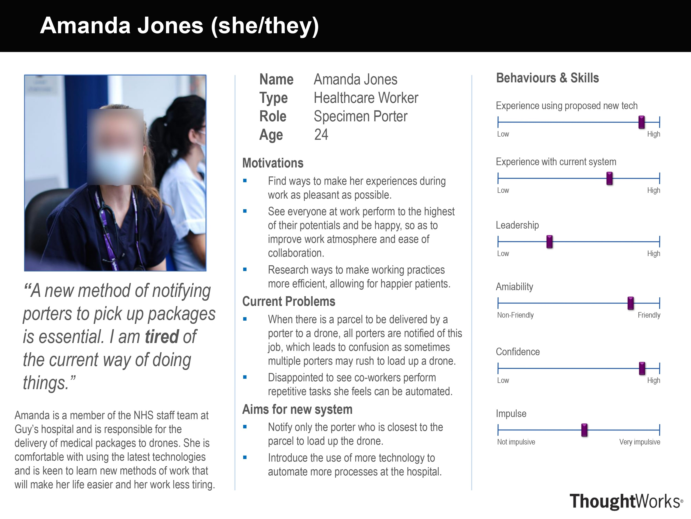
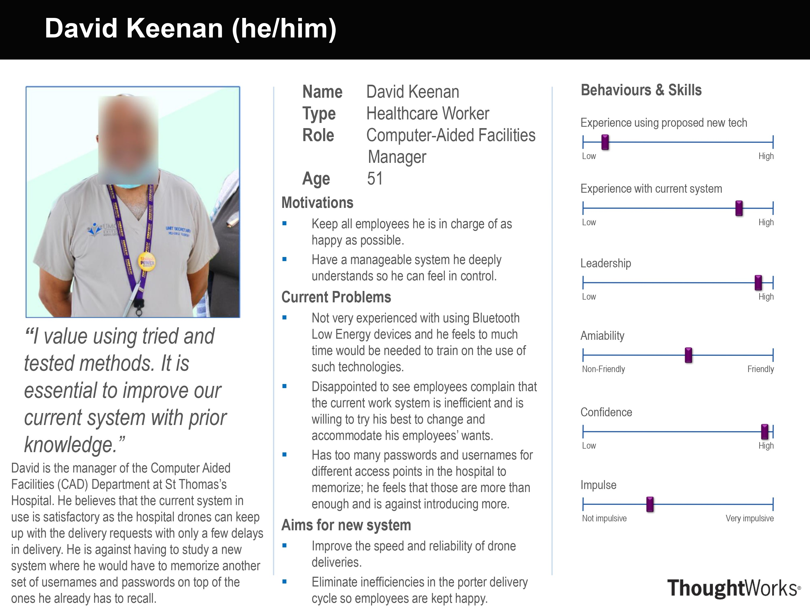
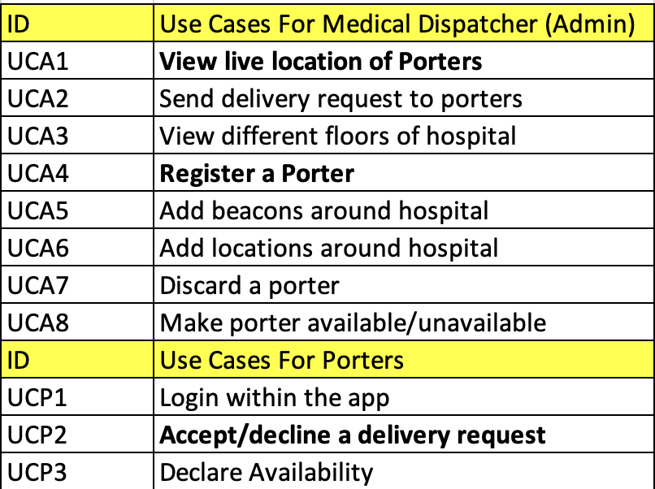
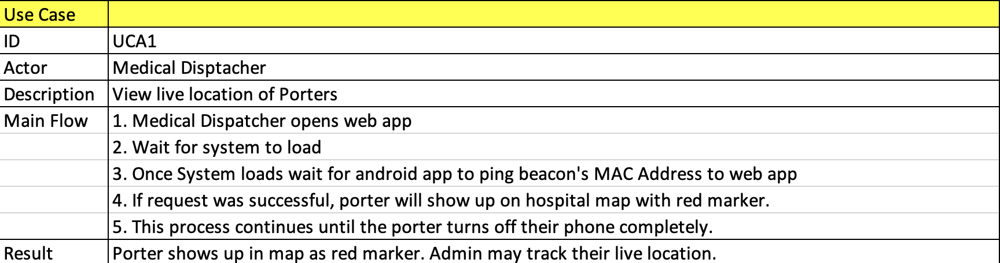
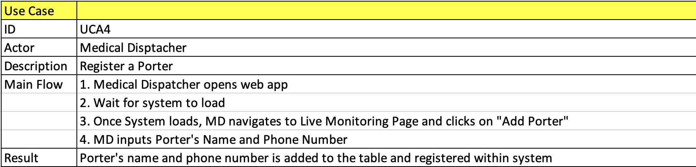
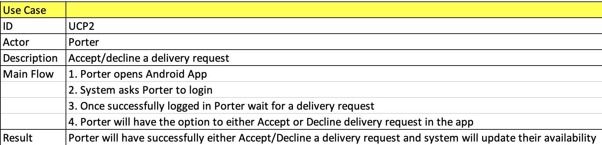

Requirements
The process of defining and refining project requirements.
Project Background and Partner

Our client, Apian, is a medical drone start-up that partners with the NHS to connect the healthcare industry with the drone industry to improve patient health outcomes and staff well-being.
Apian has asked us to work together with them and start a project which we call PorterBLE.
The PorterBLE system consists of a web app and an android application.
The Android Application is for medical porters to use.
The purpose of the application is for tracking their location within the hospital.
Once a porter with their smartphone comes close to a beacon placed in the hospital, the app will send the MAC Address of that beacon to our web app’s backend for us to display their live location.
The web app is made for medical dispatchers for them to monitor the availability, location, and create a delivery request for porters who are available and closest to the pick-up location.


Project Goals
- Successfully monitor medical porters in real-time with the use of our system.
- Send delivery request to porters who are available and closest to pick-up location, improving delivery efficiency.
- Working Android App which scans for beacons placed in a hospital and allows users to respond to requests.
Requirement Gathering
We were extremely fortunate to work with a company that was very interactive and responsive. Due to this, we were able to gather a multitude of requirements from a variety of sources:
Weekly Meetings
Our client, Apian, organised weekly online meetings with us where we discussed topics like product development, progress and, of course, requirements. These meetings mostly were attended by company CEO Alexander, co-founder Hammad and COO Max. These meetings played a crucial role in our project progress as all our questions and concerns were answered by Apian's staff, who spend a lot of their time in hospitals interacting with staff members like porters, and were therefore able to inform us about a lot of demands that porters made about a potential tracking and request system.
Shared Google Document
Another method we used to obtain feedback off-hours from our client was a shared google doc we made. This was also extremely beneficial to us, as it allowed our project to move forward at a fast pace.
We also made use of the doc for informal discussions about different technologies we were considering and to update each other about the project's progress:

After receiving answers from our client to our questions, we would discuss as a team how we may move forward and evaluate each requirement. Once we all agreed to a requirement, we would then include it in our requirements list.
Personas - Typical Project Users
Amanda Jones - NHS Specimen Porter
Amanda is a member of NHS staff at Guy's Hospital. Her job as a porter is to load up drones with medical packages in response to requests sent to her by laboratory staff. She is unhappy with the current system at the hospital as, whenever there is a parcel to be delivered, all porters are notified, regardless of their location in the hospital. This, as described by her, is an inefficient and tiring process as there is no reason to notify every porter to make a delivery when the porters could be easily located, and the request should be sent to the nearest one to the package. Amanda is a person that tries to continually make improvements to her methods of work, in order to make them more efficient and save herself the extra time and effort. She is eager to see her co-workers do the same as she feels it will make them happier and improve the overall atmosphere at the hospital and hence, working conditions. She has noted that she is not much of a leader, which means that it is unlikely she would speak up about this issue, so she really appreciated us taking into consideration her thoughts when designing our prototypes for the new application.
Finally, she also feels that a new system would be beneficial to everyone at the hospital as it will be easier to use than the old, outdated technologies currently in use.
David Keenan - Computer-Aided Facilities Manager
David is the manager of the Computer-Aided Facilities (CAD) department at St. Thomas's hospital. Like Amanda, he is also a potential user of our system, however, he has a different opinion on the system currently in use for the drone delivery of pharmaceuticals. He believes that the current system in use is somewhat satisfactory as the hospital drones can keep up with the delivery requests with only a few delays in delivery. He would rather not study a new system, where he would have to memorize another set of usernames and passwords on top of the ones he already has to remember. David, though, wants to keep all his employees happy, so if there was no other option left by his employees, he would be willing to change his mind and understands the potential benefits and improvements that our proposed solution would provide. David also describes himself as a person of high leadership and confidence so it is understandable that he would want a system that he can study and be in complete control of which would allow him to guide his staff whenever an issue arises.
In general, he would like a system that efficiently deals with the priority-scheduling of the delivery of packages, allows users to view where porters are located and is relatively simple to use.
Use Cases
Find below the specific situations where our solution would be the most productive:

Here are a few examples of the logic behind the given use cases:
   MoSCoW
Based on all the requirements identified, we were able to draft up our MoSCoW list:
Functional
| ID | Description | Priority |
|---|---|---|
| 1 | Accurately track the live locations of porters | MUST |
| 2 | Display the live locations of all porters to doctors on PC. | MUST |
| 3 | Display the delivery details/history of a porter. | MUST |
| 4 | Communicate where and when to pick up. | MUST |
| 5 | Allow porters to decline/accept tasks. | MUST |
| 6 | Communicate to porters without the use of a smartphone necessarily. | SHOULD |
| 7 | Automate the assignments based on a priority list | SHOULD |
| 8 | Consider a range of factors about porters when assigning them a delivery | SHOULD |
| 9 | See the live locations of all crash calls/integrate into Crash 2222 calls. | COULD |
| 10 | Emergency handling features i.e. deal with deliveries that must be completed ASAP such as a blood transfusion delivery. | COULD |
| 11 | Ability to track individual high priority assets. | WON'T |
Non-Functional
| ID | Description | Priority |
|---|---|---|
| 1 | Reliability: System must operate without downtime during working hours | MUST |
| 2 | Scalability: System must be able to handle an increasing number of users, patients, and deliveries. | MUST |
| 3 | Security: The system must protect patient privacy and ensure data integrity and confidentiality. | MUST |
| 4 | Usability: The user interface should be easy to use for both porters and doctors. | SHOULD |
| 5 | Performance: The system should be fast and responsive to ensure efficient task management and reduce patient waiting times. | SHOULD |
| 6 | Maintainability: The system could be easy to expand and add new hospitals and their corresponding porter staff. | COULD |